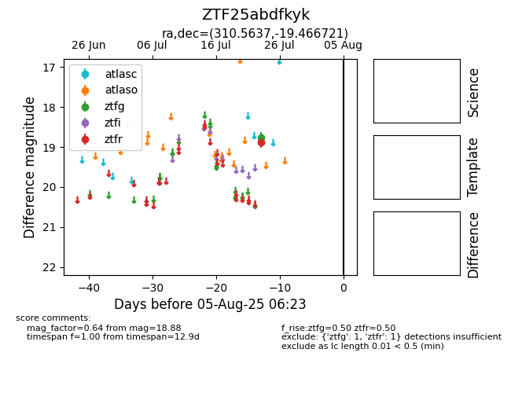

Target ZTF25abdfkyk at 2025-08-06 17:45, see:
FINK: fink-portal.org/ZTF25abdfkyk
Lasair: lasair-ztf.lsst.ac.uk/objects/ZTF25abdfkyk
ALeRCE: alerce.online/object/ZTF25abdfkyk
alt names
ZTF25abdfkyk (ztf,fink)
coordinates:
equatorial (ra, dec) = (310.5637,-19.46672)
galactic (l, b) = (26.3223,-32.82463)
photometry
last ztfg=18.76, ztfr=18.88
1 ztfg, 1 ztfr detections
